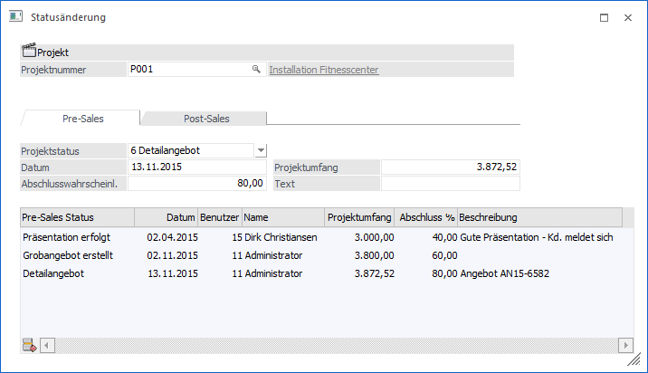
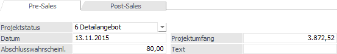
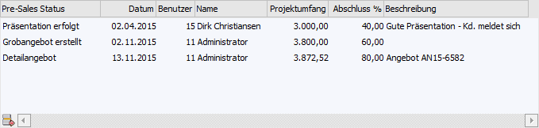
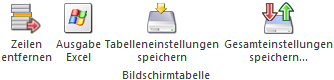
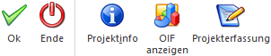

In dem Fenster "Statusänderungen", welches über den Menüpunkt…
1 WinLine FAKT
1 Erfassen
1 Projektverwaltung
1 Statusänderung
… aufgerufen werden kann, können Statusänderungen im Pre-Sales- bzw. Post-Sales-Bereich eines Projekts festgehalten werden.
Hinweis
Durch die Anwahl des Buttons "Statusänderung" im Projektstamm (Register "Pre-Sales" oder "Post-Sales") wird das Fenster automatisch geöffnet und die Projektnummer vorbelegt.

Im oberen Teil des Fensters wird das Projekt ausgewählt.
Ø Projektnummer
An dieser Stelle wird die Projektnummer des Projekts hinterlegt.
Ø Bezeichnung
An dieser Stelle wird die Bezeichnung des Projekts dargestellt.
Register "Pre-Sales" / "Post-Sales"

Je nach ausgewählten Register kann der Pre-Sales- oder der Post-Sales-Status des Projekts geändert oder bestehende Stati editiert werden. Für eine schnelle und effiziente Neuanlage eines Status wird der aktuelle Status in den folgenden Feldern vorbelegt. Das Editieren eines bestehenden Status wird per Doppelklick auf eine Zeile in der Stati-Tabelle ausgelöst.
Ø Projektstatus
Auswahl des Projektstatus den das Projekt erhalten soll.
Hinweis
Wenn eine bestehende Zeile editiert wird, so kann der Projektstatus nicht geändert werden.
Ø Datum
An welchem Tag wurde der Status gesetzt. Das Datum kann editiert werden und wird bei der Historie des Projekts angezeigt.
Ø Abschlusswahrscheinlichkeit/Projektfortschritt
Der beim Projektstatus hinterlegte Prozentsatz wird hier vorgeschlagen und kann editiert werden.
Ø Projektumfang
Erfassung des Projektumfangs. Dieser wird im Register "Budget" des Projektstamms dem erfassten Budget (Artikel und Ressourcen) und den erfassten Angeboten, sowie den Ist-Kosten gegenübergestellt.
Ø Text
Eingabe eines Beschreibungstexts zu diesem Status.
Tabelle "Status"

In der Stati-Tabelle werden alle bislang erfassten Stati zu dem ausgewählten Projekt angezeigt. Per Doppelklick auf eine Zeile kann diese editiert werden.
Ø Editieren beenden
Wurde eine Zeile in der Stati-Tabelle per Doppelklick ausgewählt, so befindet man sich im Editiermodus. Mit Hilfe des Buttons "Editieren beenden" kann dieses Editieren abgebrochen werden.
Tabellenbuttons

Ø Zeile entfernen
Mit Hilfe des Buttons "Zeilen entfernen" kann die aktuell ausgewählte Status-Zeile gelöscht werden.
Ø Ausgabe Excel
Durch Anwahl des Buttons "Ausgabe Excel" wird der Inhalt der Tabelle nach Microsoft Excel übergeben.
Ø Tabelleneinstellungen speichern
Die Spalten einer Tabelle können grundsätzlich an beliebige Positionen verschoben, bzw. in der Breite entsprechend angepasst werden. Durch Anwahl des Buttons "Tabelleneinstellungen speichern" werden die Einstellungen benutzerspezifisch gespeichert und bei dem nächsten Aufruf des Programmpunktes wieder vorgeschlagen.
Ø Gesamteinstellungen speichern
Im Gegensatz zu "Tabelleneinstellungen speichern" können mit "Gesamteinstellungen speichern" mehrere Tabellenaufbauten gespeichert und nach Wunsch geladen werden. Zusätzlich werden Sonderfunktionen der Tabelle (z.B. "Spalte gruppieren") ebenfalls bei der Speicherung bedacht.
Buttons

Ø Ok
Durch Anwahl des Buttons "Ok" bzw. der Taste F5 wird die Statusänderung gespeichert.
Ø Ende
Durch Anwahl des Buttons "Ende" bzw. der Taste ESC wird das Fenster geschlossen und alle nicht gespeicherten Eingaben verworfen.
Ø Projektinfo
Es wird die Projektabrechnung geöffnet, auf welcher alle relevanten Daten des aktuellen Projekts aufgelistet werden.
Ø OIF anzeigen
Durch Anwahl des Buttons "OIF anzeigen" wird im rechten Teil des Bildschirms ein Informationsbereich eingeblendet. In diesem werden Daten zum aktuellen Projekt angezeigt.
Ø Projekterfassung
Mit Hilfe des Buttons "Projekterfassung" wird die Projekterfassung für das aktuelle Projekt geöffnet.